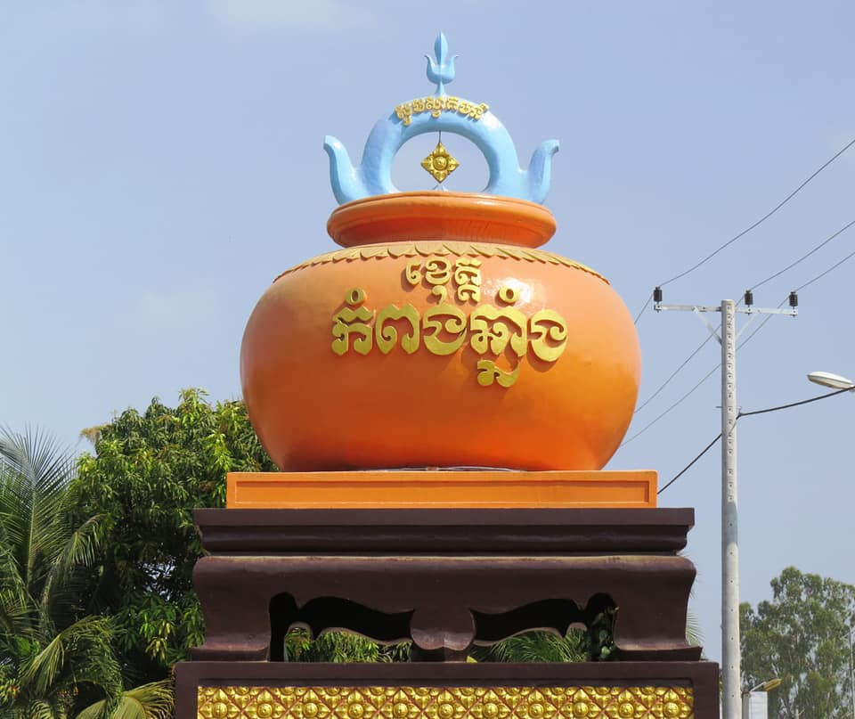

 ខេត្តកំពង់ឆ្នាំងស្ថិតនៅភាគកណ្ដាលប្រទេសកម្ពុជា។ ខេត្តកំពង់ឆ្នាំងមានព្រំប្រទល់ខាងជើងជាប់ខេត្តកំពង់ធំ ខាងកើតជាប់ខេត្តកំពង់ចាម ខាងត្បូងជាប់ខេត្តកំពង់ស្ពឺ និងខាងលិចជាប់ខេត្តពោធិ៍សាត់។ ខេត្តនេះស្ថិតនៅចម្ងាយប្រមាណ ៩១ គ.ម. ពីរាជធានីភ្នំពេញ។ ខេត្តកំពង់ឆ្នាំងមានអាកាសធាតុក្ដៅហើយសើមដូចបណ្ដាខេត្តទូទាំងប្រទេសកម្ពុជាដទៃទៀតដែរ។ រដូវវស្សាចាប់ពីខែ ឧសភា ដល់ខែ តុលា (សីតុណ្ហភាពពី ២៧ ទៅ ៣៥អង្សា សំណើម ៩០ % ) រដូវរងារពីខែ វិច្ឆិកា ដល់ខែ មីនា (សីតុណ្ហភាពពី ១៨ ទៅ ២៨ អង្សា) និងរដូវក្ដៅពីខែ មីនា ដល់ ខែ ឧសភា (សីតុណ្ហភាពពី ២៨ ទៅ ៣៦ អង្សា)។ វាគឺស្ថិតក្នុងវាលល្បប់ចំកណ្ដាលប្រទេសកម្ពុជានិងត្រូវនាំមកដោយទន្លេសាប ដៃនៃទន្លេមេគង្គ។ ទីក្រុងរាជធានីភ្នំពេញច្បាស់ជាលូតរហូតដល់វាព័ទ្ធជុំវិញដោយព្រំដែនខេត្តកំពង់ឆ្នាំងជាមិនខាន។សំណល់បុរាណវត្ថុពីតំបន់នេះត្រូវបានគេដឹងថាចំណោមវត្ថុបុរាណជាច្រើនដែលគេរកឃើញនោះគឺមកពីទ្វារវត្តី អតីតនគរមួយដែលបច្ចុប្បន្នស្ថិតក្នុងប្រទេសថៃសព្វថ្ងៃ ដោយចុះកាលបរិច្ឆេទពីសតវត្សទី៦ ដល់ ទី១១។[ប្រភព?] ខេត្តកំពង់ឆ្នាំងកាលពីប៉ុន្មានសតវត្សកន្លងទៅគឺជាទីក្រុងឆ្នេរនៅតាមច្រកផ្លូវរវាង ចិន និង ឥណ្ឌា ដោយសារតែការហូរនាំដីល្បប់ពីទន្លេមេគង្គ ខ្សែឆ្នេរបានកាន់តែឃ្លាតឆ្ងាយពីសមុទ្រឆ្ងាយៗទៅ។ នៅពេលដែលទន្លេសាបបានផ្លាស់ប្ដូរខ្សែទឹកហូររបស់វា ទីក្រុងនេះក៏បានបាត់បង់ប្រភពទឹកដ៏សំខាន់របស់ខ្លួន និងដូច្នេះវាក៏បានក្លាយជារហោស្ថាន ប្រជាជនក៏រើលំនៅទៅកាន់ទីក្រុងមួយដែលគេហៅថា កំពង់ត្រឡាច។ ទីក្រុងមួយបានកកើតបន្តិចៗម្ដងជុំវិញទីនោះ ដែលនាំមកនូវជីវិតថ្មីដល់កំពង់ឆ្នាំង។ សារមន្ទីរមួយបង្ហាញនូវកំណត់ត្រាបុរាណវិទ្យាអំពីប្រវត្តិរបស់ទីក្រុងមួយនេះ។ក្នុងសៀវភៅសិក្សាគោលអក្សរសាស្ត្រខ្មែរ ថ្នាក់ទី ១១ របស់ក្រសួងអប់រំ យុវជន និងកីឡានៃព្រះរាជាណាចក្រកម្ពុជា បានរំលេចឡើងនៃរបាំស្នែងទន្សោងលើក្របទំព័រមុខ រួមទាំងបញ្ចូលក្នុងអត្ថបទស្តាប់។ នេះគឺជាកេរមត៌កដ៏មានតម្លៃ ដែលបន្សល់ទុកមកតាំងពីដូនតា រហូតមកទល់ពេលបច្ចុប្បន្ន ប៉ុន្តែវាហាក់បីសាបរលៀបមិនសូវមានអ្នកលើកយកមកសម្តែងច្រើនឡើយ។ បើចង់មើលការសម្តែងដ៏រស់រវើកនេះ គេឃើញតាមរយៈវីឌីអូឯកសារដែលសម្តែងដោយក្រុមសិល្បៈនៃសាលាមធ្យមវិចិត្រសិល្បៈ ហើយសូម្បីតែក្រុមដែលមានសម្តែងរបាំស្នែងទន្សោងនេះនាពេលបច្ចុប្បន្ន ក៏ជាក្រុមនៃសាលាមធ្យមវិចិត្រសិល្បៈដែរ។ ហើយចំណែកនៅឯភូមិសាស្ត្រឃុំអញ្ចាញរូង ស្រុកបរិបូណ៌ ខេត្តកំពង់ឆ្នាំង ក៏មានប្រជាជនតិចតួចណាស់ដែរ ដែលចេះចាំនូវទម្រង់លេងនៃរបាំនេះ ព្រមទាំងចង្វាក់ភ្លេងដែលលេងកំដរក៏គេមិនសូវដឹង តែចំពោះទំនុកច្រៀងវិញប្រជាជនតំបន់នេះចេះច្រៀងបានខ្លះ បែបសើចកំសាន្ត ព្រោះទាំងទំនុក និងអត្ថន័យវាមានភាពកំប្លុកកំប្លែង។ មិនត្រឹមតែប៉ុណ្ណោះទំនុកច្រៀងនេះ គេច្រៀងបែបជាសំនៀងភាសានិយាយរបស់អ្នកស្រុកផ្ទាល់តែម្តង ដែលអាចហ៊ាននិយាយបានថាអ្នកដែលមិនធ្លាប់ស្តាប់ ឬមិនយល់អំពីគ្រាមភាសាអ្នកភូមិអញ្ចាញរូងនោះមិនដឹងឡើយ។ ខ្ញុំនឹងលើកទំនុកច្រៀងដែលពលរដ្ឋក្មេងចាស់នៅតំបន់ភូមិថ្លុកជ្រៅ និងតំបន់មួយចំនួនទៀតដែលតែងលើកទំនុកនេះមកច្រៀងលេងកំដរបរិយាកាសកម្មវិធីណាមួយ។ ក្នុងឱកាសនេះខ្ញុំសុំរំលេចអនុស្សារីយ៍មួយដែលខ្ញុំបានឮសម្តីលោកតាម្នាក់ឈ្មោះ ដូង ដែលប្រជាប្រិយរបស់គាត់ ត្រូវបានប្រជាជននៃស្រុកបរិបូណ៌ស្គាល់គាត់ថាជាតួរល្ខោនជើងចាស់ម្នាក់ដ៏ល្បីផងដែរ។ លោកតា ដូង ក៏ជាពិធីករដ៏មានវោហារស័ព្ទម្នាក់ គេស្គាល់គាត់តាមរយៈការសម្ភោធន៍សមិទ្ធិផលនានានៅក្នុងស្រុកបរិបូណ៌ អមដំណើរសម្តេចចៅហ្វាយវាំង គង់ សំអុល។ មុនដំណើរមកដល់របស់សម្តេចចៅហ្វាយវាំង លោកតា ដូង តែងឡើងវេទិកានិយាយកំដរអង្គពិធីទាំងមូលកុំអោយស្ងាត់ គាត់តែងលើកឡើងអំពីប្រវត្តិតស៊ូរបស់គាត់ក្នុងវិស័យសិល្បៈ ហើយរឿងជាពិសេសក្នុងឱកាសពិធីសម្ភោធស្ពានដែកអញ្ចាញរូង ឆ្លងស្ទឹងបរិបូណ៌កាលពីឆ្នាំ ២០១៣ គាត់បានលើកឡើងពីទំនុកចម្រៀងនៃរបាំទន្សោងព្រៃព្រាលនេះ ហើយក្នុងអង្គពិធីផ្ទុះសំណើចគឹលកញ្ជ្រៀវ។ ព្រោះតែទំនុកចម្រៀងនៃរបាំទន្សោងព្រៃព្រាលនេះ ដែលទំនុកនេះគឺ៖ ទន្សោងៗផ្រៃផ្រាល គោរ៉ាលៗកប់ផក់ កញ្ជ្រាំងៗបស់ប៉ក់ ថើមក់ៗក្រហមទែង[1]។